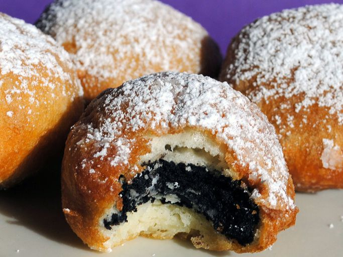

Deep Fried Oreos

Description
Oreos get dipped into pancake batter and fried — yummy! You can do this with or without a deep fryer.
Ingredients
- 2 quarts of vegetable oil for frying
- 1 cup of milk
- 1 large of egg
- 2 teaspoons of vegetable oil
- 1 cup of pancake mix
- 18 ounce of oreos (or any cream-filled sandwich cookies)
Steps
- Heat oil in a deep fryer or large saucepan to 375°F (190°C).
-
Whisk milk, egg, and 2 teaspoons of vegetable oil in a large bowl until smooth. Stir in the pancake mix until
no
dry lumps remain.
- Dip cookies into batter, one at a time, and carefully place into hot oil.
- Fry in batches, 4 or 5 at a time, until cookies are golden brown, about 2 minutes.
- Drain on a paper towel-lined plate before serving.